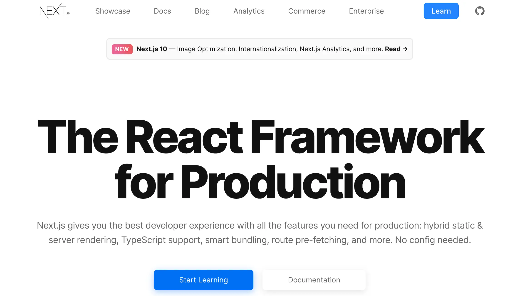

Getting Started with Tailwind CSS
Tailwind CSS is a utility-first CSS framework that allows you to build modern websites without ever leaving your HTML. Lets explore the basics of Tailwind CSS and how it can revolutionize your workflow.
What is Tailwind CSS?
Tailwind CSS provides low-level utility classes that let you build completely custom designs without ever leaving your HTML. Instead of pre-designed components, Tailwind gives you utility classes that you can combine to create your own unique designs.
Unlike traditional CSS frameworks like Bootstrap, Tailwind doesn't impose design decisions that you have to fight against to implement your own design. It gives you the building blocks to create your own unique designs without the overhead of overriding existing styles.
Why Choose Tailwind CSS?
1. Rapid Development
With Tailwind, you can quickly prototype and build interfaces by applying pre-existing classes directly in your HTML. There's no need to constantly switch between HTML and CSS files, making development faster and more intuitive.
<!-- Traditional CSS approach -->
<button class="btn-primary">Click me</button>
<!-- Tailwind CSS approach -->
<button class="rounded bg-blue-500 px-4 py-2 text-white hover:bg-blue-600">
Click me
</button>While the Tailwind approach seems more verbose initially, it eliminates the need to create and maintain separate CSS files, name classes, and establish CSS architecture.
2. Responsive Design Made Easy
Building responsive layouts is straightforward with Tailwind's responsive modifiers:
<div class="w-full md:w-1/2 lg:w-1/3">
<!-- Content here -->
</div>This div will be full width on mobile, half width on medium screens, and one-third width on large screens.
3. Consistent Design System
Tailwind promotes consistency across your projects through its customizable design system. The default configuration includes a thoughtful color palette, spacing scale, typography scale, and more, all of which can be customized to match your brand.
4. Optimized for Production
Tailwind's built-in purging system removes unused CSS for production, resulting in very small file sizes. This means that despite the comprehensive nature of the framework, your production CSS will only include the styles you actually use.
Setting Up Tailwind CSS
Getting started with Tailwind CSS is straightforward. Here's how to set it up in a new project:
Installation
- Create a new project directory and initialize it:
mkdir my-tailwind-project
cd my-tailwind-project
npm init -y- Install Tailwind CSS and its dependencies:
npm install tailwindcss postcss autoprefixer- Generate the Tailwind configuration files:
npx tailwindcss init -pThis creates two files:
-
tailwind.config.js: For customizing your Tailwind setup postcss.config.js: For configuring PostCSS
Configuration
Open your newly created tailwind.config.js file and add
the paths to your template files:
/** @type {import('tailwindcss').Config} */
module.exports = {
content: ["./src/**/*.{html,js,jsx,ts,tsx}", "./public/index.html"],
theme: {
extend: {},
},
plugins: [],
};Creating Your CSS File
Create a CSS file (e.g., src/input.css) with the
following Tailwind directives:
@tailwind base;
@tailwind components;
@tailwind utilities;These directives inject Tailwind's base styles, component classes, and utility classes.
Build Process
Add a build script to your package.json:
"scripts": {
"dev": "tailwindcss -i ./src/input.css -o ./dist/output.css --watch"
}Run the development build:
npm run devNow, include the compiled CSS in your HTML:
<!DOCTYPE html>
<html lang="en">
<head>
<meta charset="UTF-8" />
<meta name="viewport" content="width=device-width, initial-scale=1.0" />
<link href="/dist/output.css" rel="stylesheet" />
<title>My Tailwind Project</title>
</head>
<body>
<h1 class="text-3xl font-bold text-blue-500">Hello Tailwind!</h1>
</body>
</html>Core Concepts of Tailwind CSS
Utility-First Approach
The utility-first approach means applying small, single-purpose classes directly in your HTML:
<div
class="mx-auto flex max-w-sm items-center space-x-4 rounded-xl bg-white p-6 shadow-md"
>
<div class="flex-shrink-0">
<img class="h-12 w-12" src="/img/logo.svg" alt="Logo" />
</div>
<div>
<div class="text-xl font-medium text-black">Tailwind CSS</div>
<p class="text-gray-500">The utility-first CSS framework</p>
</div>
</div>Each class applies a single style property, making it easy to understand what's happening without checking a separate CSS file.
Responsive Design
Tailwind includes responsive variants for almost every utility. The default breakpoints are:
sm: 640px and upmd: 768px and uplg: 1024px and upxl: 1280px and up2xl: 1536px and up
To use them, prefix utilities with the breakpoint name:
<div class="text-center sm:text-left">
<!-- Text is centered on mobile, left-aligned on sm screens and up -->
</div>Hover, Focus, and Other States
Tailwind provides state variants for interactive elements:
<button
class="rounded bg-blue-500 px-4 py-2 font-bold text-white hover:bg-blue-700 focus:ring-2 focus:ring-blue-400 focus:outline-none"
>
Hover or focus me
</button>Dark Mode
Tailwind supports dark mode with the dark: variant:
<div class="bg-white text-gray-900 dark:bg-gray-800 dark:text-white">
<!-- Content that adapts to light/dark mode -->
</div>
To enable this feature, set darkMode: 'class' or
darkMode: 'media'
in your
tailwind.config.js.
Common Tailwind CSS Utilities
Layout
-
Width/Height:
w- { size},h- { size} -
Margin/Padding:
m- { size},p- { size},mx- { size},py- { size}, etc. -
Display:
block,inline,flex,grid, etc. -
Position:
static,relative,absolute,fixed,sticky
Typography
-
Font Size:
text-xs,text-sm,text-base,text-lg, etc. -
Font Weight:
font-thin,font-normal,font-medium,font-bold, etc. - Text Color:
text- { color}- { shade} -
Text Alignment:
text-left,text-center,text-right
Backgrounds
- Background Color:
bg- { color}- { shade} - Background Opacity:
bg-opacity- { value} - Background Position:
bg- { position} - Background Size:
bg- { size}
Flexbox & Grid
-
Flex Direction:
flex-row,flex-col -
Justify Content:
justify-start,justify-center,justify-between, etc. -
Align Items:
items-start,items-center,items-end, etc. - Grid Template Columns:
grid-cols- { n} - Grid Gap:
gap- { size}
Customizing Tailwind
Tailwind's power comes from its customizability. You can extend or
override the default theme in your tailwind.config.js:
module.exports = {
theme: {
extend: {
colors: {
"brand-blue": "#1992d4",
"brand-red": "#e53e3e",
},
spacing: {
72: "18rem",
84: "21rem",
96: "24rem",
},
fontFamily: {
display: ["Gilroy", "sans-serif"],
body: ["Graphik", "sans-serif"],
},
},
},
};
You can also create your own utilities using the
@layer
directive:
@layer utilities {
.text-shadow {
text-shadow: 2px 2px 4px rgba(0, 0, 0, 0.5);
}
}Building Components with Tailwind
While Tailwind focuses on utility classes, you can build consistent components by extracting repeated patterns.
Using @apply
The @apply directive lets you create component classes
by combining utilities:
@layer components {
.btn-primary {
@apply focus:ring-opacity-75 rounded-lg bg-blue-500 px-4 py-2 font-semibold text-white shadow-md hover:bg-blue-700 focus:ring-2 focus:ring-blue-400 focus:outline-none;
}
}Then use it in your HTML:
<button class="btn-primary">Click me</button>Using JavaScript Components
For more complex components, combine Tailwind with your JavaScript framework of choice:
// React component example
function Button({ children, primary = false }) {
const baseStyles =
"font-semibold rounded-lg focus:outline-none focus:ring-2 focus:ring-blue-400 px-4 py-2";
const primaryStyles = "bg-blue-500 text-white hover:bg-blue-700";
const secondaryStyles = "bg-gray-200 text-gray-800 hover:bg-gray-300";
return (
<button
className={`${baseStyles} ${primary ? primaryStyles : secondaryStyles}`}
>
{children}
</button>
);
}Best Practices
Organization
- Group related utilities together for readability
- Consider using multi-line formatting for complex elements
- Use comments to separate major sections of your HTML
Performance
- Enable JIT (Just-In-Time) mode for faster development
- Configure purging correctly to minimize production CSS
- Use
@layerto organize your custom styles
Maintainability
- Extract common patterns into reusable components
- Use consistent naming conventions for custom components
- Document your custom utilities and components
Integration with Popular Frameworks
Tailwind CSS integrates easily with modern JavaScript frameworks:
React/Next.js
// Install packages
// npm install tailwindcss postcss autoprefixer
// npx tailwindcss init -p
// In _app.js or equivalent
import '../styles/globals.css';
// In globals.css
@tailwind base;
@tailwind components;
@tailwind utilities;Vue/Nuxt.js
// Install Tailwind CSS
// npm install tailwindcss postcss autoprefixer
// npx tailwindcss init
// In nuxt.config.js
export default {
buildModules: ["@nuxtjs/tailwindcss"],
};Angular
// Install Tailwind CSS
// npm install tailwindcss postcss autoprefixer
// npx tailwindcss init
// Update angular.json to include Tailwind
// Update styles.css with Tailwind directivesReal-World Examples
Card Component
<div
class="mx-auto max-w-md overflow-hidden rounded-xl bg-white shadow-md md:max-w-2xl"
>
<div class="md:flex">
<div class="md:flex-shrink-0">
<img
class="h-48 w-full object-cover md:w-48"
src="/img/product.jpg"
alt="Product"
/>
</div>
<div class="p-8">
<div
class="text-sm font-semibold tracking-wide text-indigo-500 uppercase"
>
Product
</div>
<a
href="#"
class="mt-1 block text-lg leading-tight font-medium text-black hover:underline"
>Product Name</a
>
<p class="mt-2 text-gray-500">
This amazing product will transform your life in ways you never
imagined.
</p>
<div class="mt-4">
<button
class="rounded bg-indigo-500 px-4 py-2 text-white hover:bg-indigo-600"
>
Add to Cart
</button>
</div>
</div>
</div>
</div>Form Component
<form class="mx-auto max-w-md rounded-lg bg-white p-6 shadow-md">
<h2 class="mb-6 text-2xl font-bold text-gray-800">Contact Us</h2>
<div class="mb-4">
<label class="mb-2 block text-sm font-bold text-gray-700" for="name">
Name
</label>
<input
class="w-full appearance-none rounded border px-3 py-2 leading-tight text-gray-700 shadow focus:border-blue-300 focus:ring focus:outline-none"
id="name"
type="text"
placeholder="Your name"
/>
</div>
<div class="mb-4">
<label class="mb-2 block text-sm font-bold text-gray-700" for="email">
Email
</label>
<input
class="w-full appearance-none rounded border px-3 py-2 leading-tight text-gray-700 shadow focus:border-blue-300 focus:ring focus:outline-none"
id="email"
type="email"
placeholder="Your email"
/>
</div>
<div class="mb-6">
<label class="mb-2 block text-sm font-bold text-gray-700" for="message">
Message
</label>
<textarea
class="h-32 w-full appearance-none rounded border px-3 py-2 leading-tight text-gray-700 shadow focus:border-blue-300 focus:ring focus:outline-none"
id="message"
placeholder="Your message"
></textarea>
</div>
<div class="flex items-center justify-between">
<button
class="rounded bg-blue-500 px-4 py-2 font-bold text-white hover:bg-blue-700 focus:ring focus:outline-none"
type="button"
>
Send Message
</button>
</div>
</form>Conclusion
Tailwind CSS has revolutionized the way developers approach styling web applications. By embracing a utility-first methodology, it provides a flexible, maintainable, and efficient way to create beautiful user interfaces without the overhead of traditional CSS.
While it may have a learning curve, especially for those accustomed to more traditional approaches, the productivity gains and design consistency make it worth the investment. As you become more familiar with the utility classes and patterns, you'll find that you can build interfaces faster than ever before.
Whether you're building a personal project, a corporate website, or a complex web application, Tailwind CSS gives you the tools to create distinctive designs that match your vision, all while maintaining the speed and flexibility modern web development demands.
Start small, experiment with the utility classes, and gradually incorporate Tailwind into your workflow. Before long, you may find yourself wondering how you ever designed websites without it.
Resources
- Official Tailwind CSS Documentation
- Tailwind UI - Pre-designed components and templates
- Tailwind CSS YouTube Channel
- Awesome Tailwind CSS - A curated list of Tailwind resources